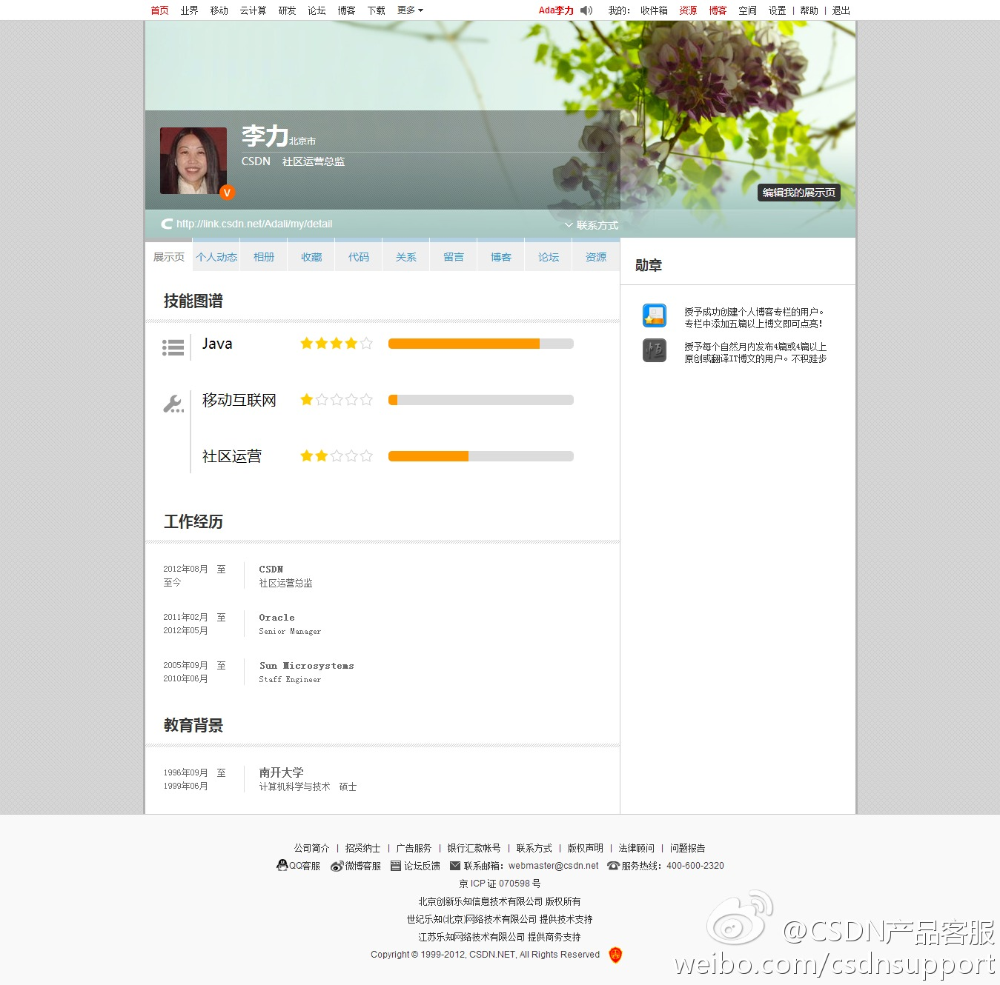

自古英雄出少年，这次参与论坛专家问答的@Erik-zou 还是在校学生。@CSDN产品客服:【CSDN论坛 第6期专家问答——视觉跟踪和Deep learning问题答疑】CSDN论坛本期专家问答我们请来了@Erik-zou 为大家解答视觉跟踪和Deep learning开发相关问题。 活动时间：5月20日~5月27日 提问还有机会获得《程序员》杂志噢，机不可失失不再来~网页链接
CSDN Link产品低调上线。有意见可直接向@曹志士 吐槽啊。[呵呵]@CSDN产品客服:#产品动态# CSDN Link产品，用于展示个人技能图谱，添加工作经历和教育背景。可帮助伯乐更好更快地找到千里马。CSDN会员在CSDN网站的专家分，技术贴，博客，上传资源，问答声望值，各种竞赛排名，都能成为个人能力的重要证明。 
这么说，那些被批评就暴怒生气的人，不止是脾气坏，还是个蠢蛋呢。//@goodbee:半夜了还在转这个呢//@sagasw: //@土摩托:必须转，说的太到位了。//@东东枪: 准确透彻，早有同感。实在是因为与此相反的情况见得很多——你只是在讨论，他认为是批评。我一直认为，这种自尊是很没出息的。---:抱歉，作者已设置仅展示半年内微博，此微博已不可见。
上学时有个班主任特别喜欢说：“不点名批评…”。其实谁都知道在说哪位同学。我现在对这种做法很反感，姣姣刚入学有段时间特别反常，说老师不喜欢她了，理由就是认为老师不点名的批评都是在说她，她这么肯定是因为老师批评的时候，目光也会看着她。我想还是点名批评吧，不然都在猜。